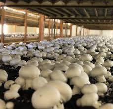

Verbeteren van compost ten behoeve van champignonteelt
De champignon (Agaricus bisporus) is een schimmel uit de familie Agaricaceae. Bij de productie van champignons wordt speciale compost gebruikt die bestaat uit een mengsel van onder andere paardenmest, kippenmest, stro en gips. Voordat de compost geschikt is voor gebruik ondergaat het verschillende behandelingen. Het bereidingsproces van de compost is er op gericht om een optimale voedingsbodem (o.a. suikers) voor de champignon teelt te verkrijgen en om groei van ongewenste micro-organismen te voorkomen.

Een groot probleem binnen de champignonteelt is echter dat de oogst van champignons sterk kan variëren. Deels kan dit afhankelijk zijn van de bedrijfsvoering op de diverse teelbedrijven en deels is dit afhankelijk van de kwaliteit van de compost. Daarnaast komt, ondanks vele voorzorgsmaatregelen, de schimmel Trichoderma agressivum regelmatig in de compost voor. Deze schimmel kan in korte tijd het bed waarin de champignons geteeld worden overgroeien waardoor de oogst mislukt. Ook micro-organismen die het pasteurisatie proces in de compost overleefd hebben kunnen een negatieve of juist een positieve invloed hebben op de teelt. Deze micro-organismen vormen in de compost een microflora. De microflora in de compost zal gedurende het proces voortdurend wisselen van samenstelling en een grote rol spelen bij de afbraak van de compost (fermentatie) en de opbouw van voor de champignon geschikte structuur en voedingstoffen. Bovendien speelt de microflora een positieve of negatieve rol richting pathogene micro-organismen. Door het ontbreken van methoden om aanwezige micro-organismen in de compost te detecteren, karakteriseren en te kwantificeren bestaat er momenteel weinig inzicht in de aanwezigheid en samenstelling van microflora in de verschillende fases van het proces en de daarbij behorende invloed die de microflora heeft op teeltresultaten.
Champignontelers (vertegenwoordigd door het Productschap Tuinbouw en CNC grondstoffen B.V.) willen een duurzame oplossing waarbij een constante kwaliteit van de compost gegarandeerd kan worden en oogstvariaties als gevolg van met name pathogene micro-organismen vermeden worden. Ter indicatie: wanneer er als gevolg van een betere kwaliteit van de compost 5 % meer champignons geproduceerd zouden kunnen worden dan betekent dit in Nederland een productiviteitsverhoging ter waarde van 12-15 mln. Euro per jaar. De Champignontelers hebben daarom de volgende onderzoeksvragen geformuleerd:
Uiteindelijk zal het onderzoek een beeld geven van de optimale samenstelling van de microflora zodat er op de lange termijn toegewerkt kan worden naar een betere en robuuste microbiologische controle van het composteringsproces. De invloed van schadelijke micro-organismen (zowel pathogene micro-organismen die direct gericht zijn tegen de champignon als aanwezige onkruidschimmels) die het proces verstoren zal verkleind worden doordat er naar gestreefd wordt om een optimale samenstelling van de microflora te verkrijgen die de groei van de pathogene micro-organismen en onkruidschimmels zoveel mogelijk voorkomt. Tevens wordt er gezocht naar antimicrobiële stoffen, al dan niet uitgescheiden door micro-organismen, die ingezet kunnen worden tegen deze schadelijke micro-organismen als "groene" milieuvriendelijke bestrijdingsmiddelen.